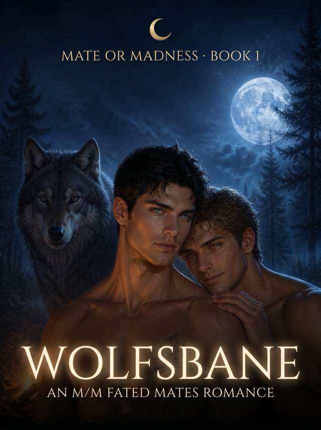

Wolfsbane
Lance has already made his peace with how his story ends. Roman intends to rewrite it.
Lance Dominic learned young how to disappear.
From the wolf pack that cast him out. From the hunters paid to drag half-bloods in. From the madness that waits for every half-blood who doesn't find a mate in time.
He never lets himself want anything he can't outrun.
Then he crosses back into Leitner lands and straight into Roman. The prince he grew up beside. The boy he swore he'd stopped thinking about. Everything Lance can never have, standing close enough to touch.
But Roman hasn't forgotten him. He wants to know why Lance vanished without a word. Why he never came back. And why, after all these years, Lance still looks at him like he's about to bolt.
- Fated mates & a soul-deep bond
- Childhood friends, reunited
- Forbidden romance — pack prince x exiled half-blood
- A reluctant alpha vs. his own pack
- Hurt/comfort, a road trip, and a ticking clock
- Found family over blood family
- "Touch him and die" protectiveness
MM fated mates romance Releases August 4
Preorder opens soon — at a special price that lasts only until release day, August 4. Join the Heartlines newsletter to be first in line.